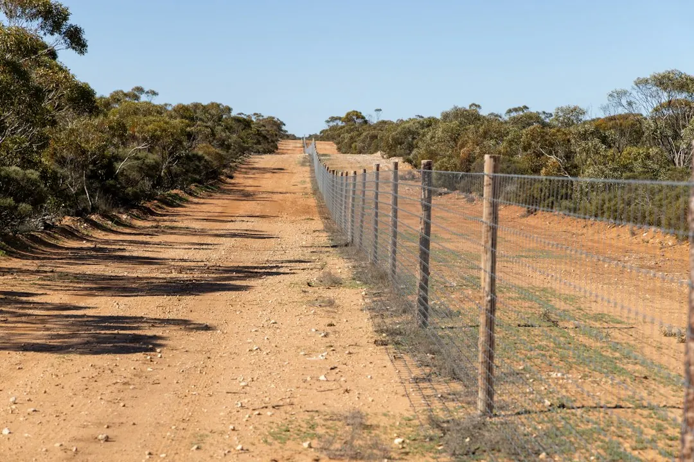

A fence decision in Perth usually turns on the condition of the existing boundary, the job it must perform and the material you will maintain. Rotten posts, loose sheets, storm damage and dragging gates may call for targeted repairs, while an exhausted run may need replacement. A written quote should identify the run length, post spacing, footing type and removal work. Colorbond, aluminium, timber, glass and matching gates suit different privacy, upkeep and access needs.
For homeowners comparing perth boundary fencing options, the practical choice is whether to repair, replace or build a new boundary around privacy, upkeep, access and the condition of the site.
Perth Boundary Fencing Explained
The services described by Perth Fencing Pros begin with ordinary boundary problems: posts rotting at the base, sheets pulled out by a storm, old fibro cracking, or a gate dragging and failing to latch. Before choosing a finish, identify what has stopped working and whether the damage is isolated or runs across the whole fence.
A few rotten posts and panels may be repairable. A long run that has reached the end of its life may be better replaced, but that judgement depends on seeing the site. Check the boundary length, access for materials, nearby structures and whether a gate is part of the same job. Those details help a fencer assess the work rather than price a generic line of panels.
- Repair is worth asking about when damage is limited to posts, panels, hinges or loose sheets.
- Replacement deserves consideration when the run is broadly failing or old fibro must be removed before a new fence is installed.
- A matching gate can be planned with the fence so the run and entry point work together.
Choose the material around its job
Material selection should follow the purpose of the boundary and the upkeep you will accept. Colorbond steel suits privacy and security with little upkeep. Aluminium slat and batten creates a modern line with adjustable privacy and very little maintenance. Timber gives a warmer appearance, but it needs more care over time.
Pool boundaries require a different decision. Glass keeps the water visible from the house, while aluminium can provide a firmer line and more screening. The published service information says either option is built to the pool fencing standard, designed to stop young children reaching the water unsupervised. Ask what barrier layout suits the pool, access points and sightlines before selecting the finish.
| Priority | Option to discuss | Question to ask |
|---|---|---|
| Low upkeep | Colorbond or aluminium | How will the finish suit the exposed parts of the block? |
| Warm appearance | Timber | What ongoing care will the timber need? |
| Pool visibility | Glass | How will the barrier and gate arrangement work? |
Make the quote comparable
A useful quote does more than state a total. It names the run length, post spacing, footing type and whether removal of the existing fence is included. These details let you compare two proposals line by line and see whether one has left out demolition, access work or a gate.
Give the fencer the run length and describe what stands there now. Mention storm damage, leaning sections, old fibro, nearby structures and anything that may restrict access. A measured quote can then identify the material, gate work and removal requirements before digging begins. If the property has an exposed block, ask how post depth and spacing have been planned for local ground and wind exposure.
Cost follows the metres of fence and the material selected. A gate or old fibro fence that must come out first can move the price. The sensible comparison is therefore scope against scope, not just the largest or smallest total.
Plan gates, access and old fibro carefully
Gates often reveal a fence problem before the rest of the boundary does. A dragging gate, a latch that will not catch or a sagging leaf can point to a tired hinge or a post that has moved. Include the gate in the site discussion, especially where a side or driveway entry needs to match the new run.
Old fibro needs a separate removal conversation. The published guidance notes that it may contain asbestos and says a specialist should explain how it will be removed safely before the replacement fence goes in. Ask whether taking down and carting away the old fence is included, what material will replace it, and how access will be managed while the boundary is open.
For a shared boundary, clarify which section is being addressed and what each quote includes. A written scope reduces confusion over the run, posts, panels, gate, footings and disposal.
Who this guide applies to
This guide is for Perth homeowners and property managers considering a new boundary, a repair, a gate, a pool barrier or removal of an old fibro fence. It is relevant whether the priority is privacy, security, pets, kerb appeal or a combination of those purposes.
The location information published by the provider refers to Perth WA and nearby suburbs including Northbridge, East Perth and West Perth, as well as places such as Highgate, South Perth, North Perth, Leederville, West Leederville, Mount Lawley, Burswood, Subiaco, Victoria Park, Kensington, Menora and Maylands. Local conditions still need to be checked at the property. Ground, wind exposure, access and the existing boundary can alter the practical specification.
Before requesting a quote, record the approximate run length, photograph leaning or damaged sections, note any gate problems and identify whether old fibro is present. Then ask for the scope, material, removal work and timing to be written down.
- Describe the existing boundary. Record the run length, leaning sections, rotten posts, loose sheets, gate faults and any old fibro.
- Choose the job outcome. Decide whether the priority is repair, privacy, security, pool separation, access or appearance.
- Compare the material. Ask how Colorbond, aluminium, timber or glass will perform for the intended use and upkeep.
- Check the written scope. Confirm the run length, post spacing, footing type, gate work and removal or disposal inclusions.
| Priority | Option to discuss | Question to ask |
|---|---|---|
| Low upkeep | Colorbond or aluminium | How will the finish suit the exposed parts of the block? |
| Warm appearance | Timber | What ongoing care will the timber need? |
| Pool visibility | Glass | How will the barrier and gate arrangement work? |
Common questions
How long does fence installation take in Perth? The time depends on the run length, material and ground. A short Colorbond run differs from a long timber fence with a gate and old fibro removal, so the site needs to be seen before a realistic timeframe is given.
How much does a new fence cost in Perth? The main cost drivers are the metres of fence and the selected material. A gate or old fibro removal can change the price, which is why a measured written quote is useful.
Should a leaning fence be repaired or replaced? A few rotten posts or panels may be repairable. If the whole run has reached the end of its life, replacement may make more sense after the fencer assesses it.
What should a fence quote include? Look for the run length, post spacing, footing type and whether old fence removal is included. Also confirm the material, gate work and any access issue discussed at the site.
This guide covers fence repairs, replacement decisions, materials, gates, pool barriers, old fibro removal and quote checks for Perth properties.